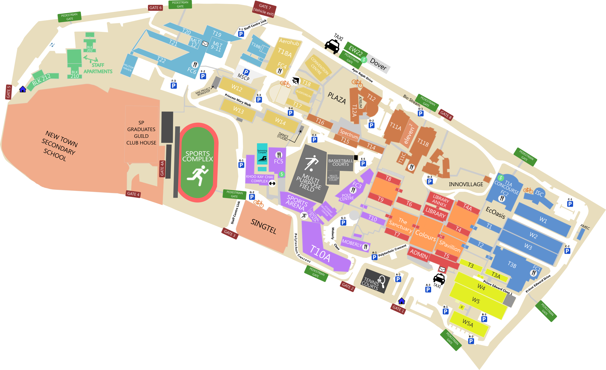

Interactive SP Map
Food Court Locations

📍
Select a food court
Click any orange marker on the map to view the food court details.
View SP food courts directly on the campus map.
Interactive SP Map

Click any orange marker on the map to view the food court details.